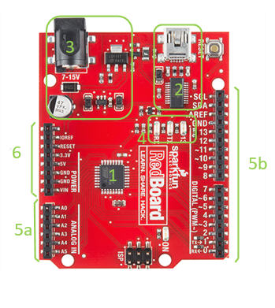
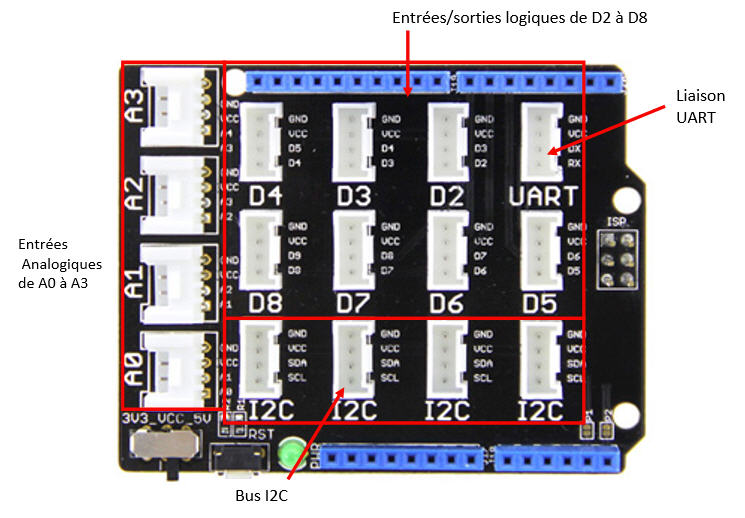

1. Carte Arduino et carte Grove
1.1. Les parties importantes de la carte
Présentation de la carte RedBoard

- Microcontrôleur : le « cerveau » qui exécute le programme.
- Port USB : permet de téléverser le programme et d'alimenter la carte en 5 V.
- Alimentation externe : entrée 7–15 V transformée en 5 V pour la carte.
- LED intégrées : indiquent l'état de la carte (alimentation, activité).
- Entrées / Sorties numériques (D2, D3, ...) : pour brancher boutons, LED, buzzer, etc.
- Entrées analogiques (A0, A1, ...) : pour lire des tensions (potentiomètre).
1.2. Carte Grove et modules
La carte Grove se branche sur l'Arduino et permet de connecter facilement des modules (capteurs et actionneurs) à l'aide de câbles 4 fils.
- Fils jaune et blanc : signaux logiques (par exemple D2, D3, D8...).
- Fils rouge et noir : alimentation 5 V et 0 V pour le module.
- Les modules utilisés dans la séquence : LED, boutons poussoirs, buzzer, moteur vibration.
Exemple : sur un connecteur noté D5 sur la carte Grove, le fil jaune peut être connecté à l'entrée 5 et le fil blanc à l'entrée 6 de l'Arduino.

Légende image 9

Légende image 10